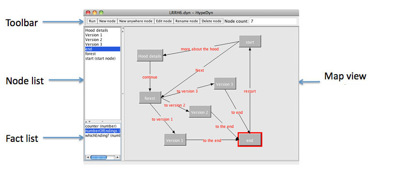

Main window
When you first open HypeDyn, you will see a new story displayed in the main window. The main window displays all the nodes and facts in the story.
The toolbar at the top of the window contains commonly used functions. These functions are also acccessible from the menubar.
The node list at the top left of the main window contains a list of all the nodes in the story. The map view to the right of the node list contains two panes. The top pane displays all the regular nodes, whereas the lower pane displays all the anywhere nodes. The map view may be zoomed in and out using the menu items in the View menu. At the lower left, below the node list, is the fact list, which displays all the facts in the story.

To create a new node, click on the New Node button in the toolbar, or select the New Node menu item in the Node menu. A dialog box will appear asking you to enter the name of the new node, after which the node will be added to the story, appearing in the map view in the top row, to the right of the right-most node, and appearing alphabetically in the node list.
Nodes may be selected by clicking on the node in the node list or in the map view. The selected node will be highlighted in both the node list and the map view. Nodes may be dragged around and repositioned in the map view. Note that the position of nodes in the map view is for the author's reference only, and has no impact on the story. You can arrange nodes as you like, to help keep track of the structure of your story and the relationship between nodes.
The selected node may be renamed by clicking on the Rename Node button or the Rename Node menu item in the Node menu. The selected node may be deleted by clicking on the Delete Node button or the Delete Node menu item in the Node menu.
To edit a node, select the node and then click on the Edit node button in the toolbar, or choose Edit node from the Node menu. You can also double-click on the node to edit. Editing a node will open the node in the node editor.
Anywhere nodes will be discussed in the Anywhere Nodes section, and facts will be discussed in the Facts section.